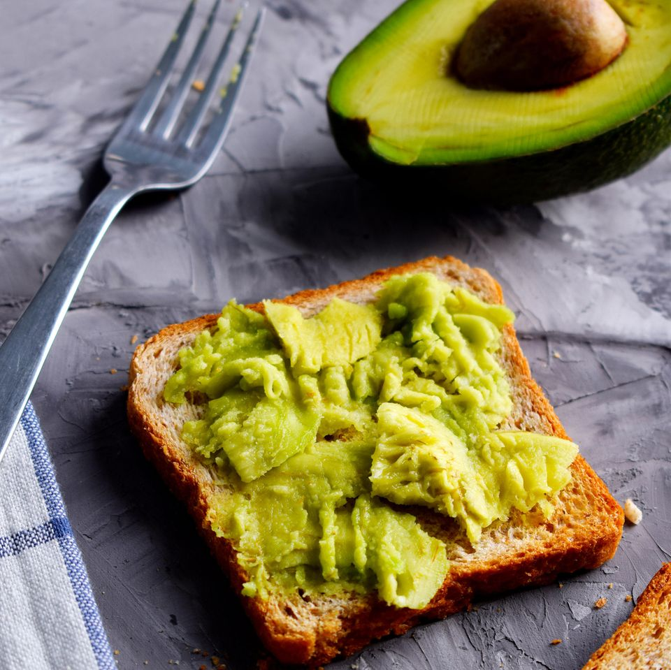

Avocado Toast

Description
Ingredients
- 1 ripe avocado, peeled and de-stoned
- 1 pinch dried chilli flakes
- ½ small garlic clove, finely grated (optional)
- ½ lime, juice only
- sea salt
- extra virgin olive oil
- 1 slice sourdough, toasted
- few sprigs fresh coriander, chopped
Steps
- Place the avocado in a bowl and add the chilli, garlic, lime juice, salt and a drizzle of extra virgin olive oil. Mash with a fork to the desired consistency. It can be as chunky or smooth as you like.
- Spread on the toast and garnish with coriander leaves.
Home